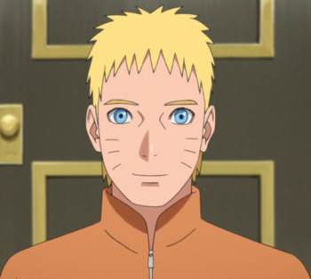

|

|
Naruto (孫そん悟ご空),
Naruto Uzumaki (うずまきナルト, Uzumaki Naruto) es el protagonista de la serie del manga y
anime Naruto y Naruto Shippūden. Asimismo es partícipe del manga y anime Boruto: Naruto Next Generations,
secuela de la obra original de Masashi Kishimoto. Es residente de Konohagakure, hijo del Cuarto Hokage, Minato Namikaze y su esposa Kushina Uzumaki, además de ser la actual reencarnación de Asura Ōtsutsuki.
Fue miembro del Equipo Kakashi junto a Sakura Haruno y Sasuke Uchiha. Actualmente es el Séptimo Hokage (七代目火影, Nanadaime Hokage; que significa "Séptima Sombra del Fuego") de Konoha, cumpliendo su sueño, así como también el esposo de Hinata Hyūga y padre de Boruto Uzumaki y Himawari Uzumaki. |